Toda Lattice
The Toda lattice is a periodic $N$-site lattice with nearest-neighbour exponential interactions $H(q,p) = \tfrac12 p \cdot p + \alpha \sum_n e^{q_n - q_{n+1}}$ — a classic completely integrable system. Like the double pendulum it is EulerLagrange-generated (no ::Type{T} constructor, inputs built at precision T by hand), and its Hamiltonian additionally takes the lattice size N. A modest lattice (N = 16) is used so the sweep stays tractable; the default $N = 200$ soliton example would make the high-order reference and the implicit solves prohibitively slow. The trajectory plots use the phase space $(q_1, p_1)$ of the first lattice site, and the bump initial condition keeps $q \in [0,1]$ so the exponentials are well-behaved.
Short scenario (Δt = 0.1, t ≤ 100)
Energy error
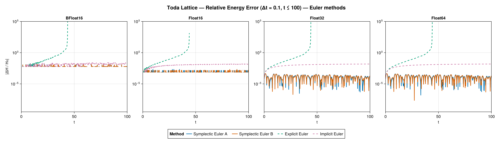
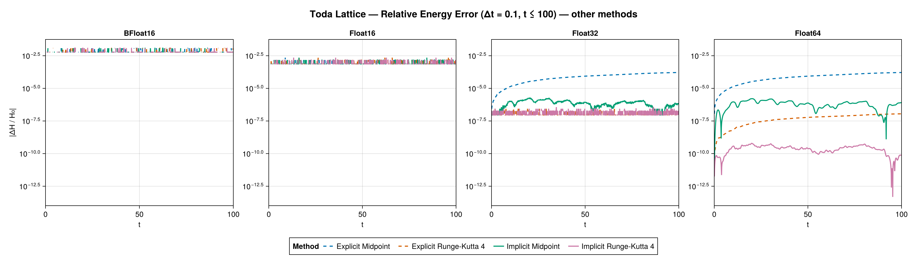
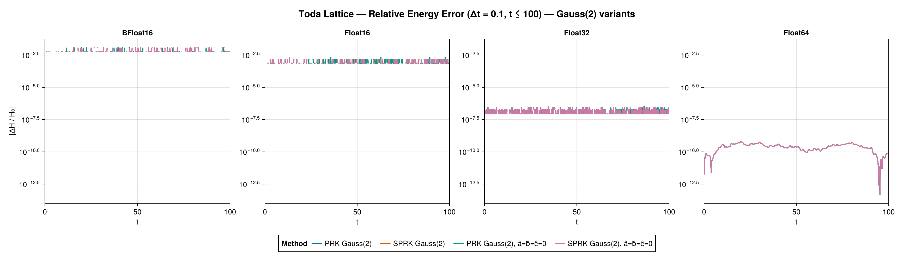
All methods run at all three precisions — the bounded initial data makes the Toda lattice markedly more Float16-friendly than the double pendulum. The now-familiar pattern holds: symplectic and midpoint/trapezoidal methods keep the energy error bounded (≈ 1e-5–1e-6 at Float32/Float64), while explicit midpoint and RK4 drift and the Euler methods grow/dissipate. Among the four partitioned-Gauss(2) variants the differences between the symplectic and duplicated tableaus and between keeping or zeroing $â, b̂, ĉ$ are most visible at the higher precisions where the energy-error floor is not precision-limited.
Solution error
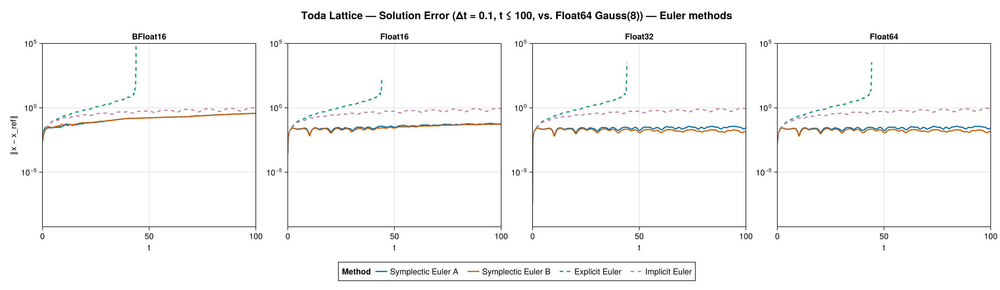
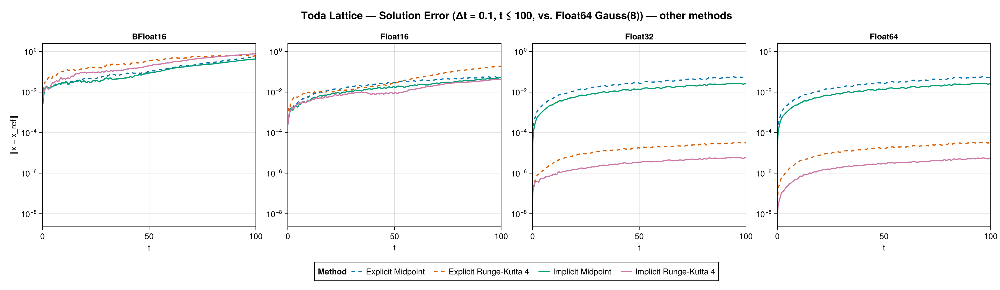
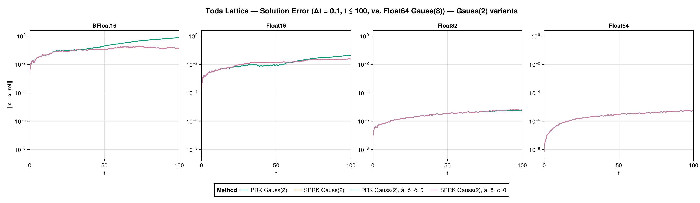
Against the Gauss(8) reference the first-site trajectory error stays smallest for the symplectic, midpoint and Gauss(2) methods and largest for the non-geometric Euler / explicit-midpoint methods, tracking the energy-error ranking across all three precisions.
Phase-space trajectory
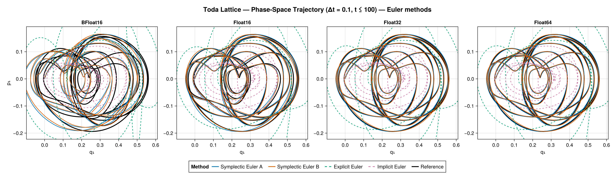
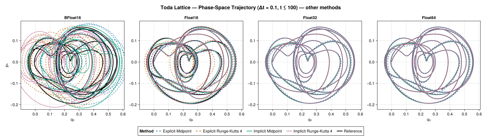
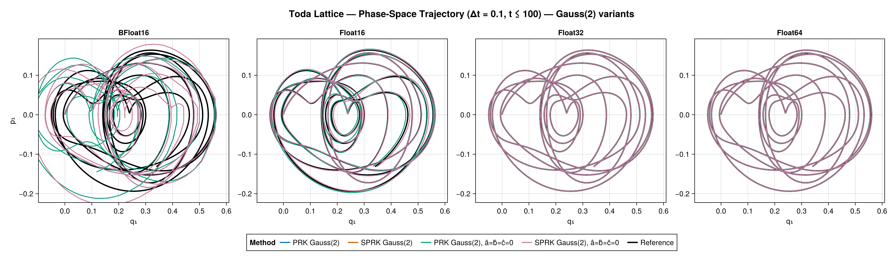
The first site traces a quasi-periodic orbit; the symplectic methods stay on it while explicit Euler spirals out and implicit Euler spirals in, just as for the single oscillator.
Coarse scenario (Δt = 1, t ≤ 100)
Energy error
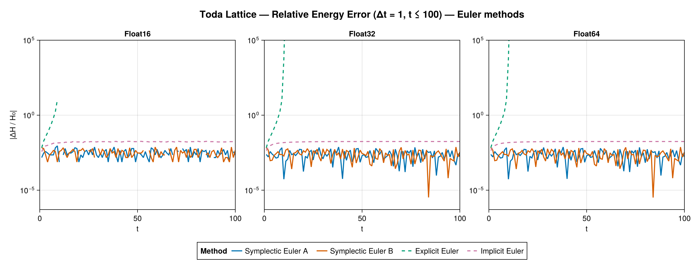
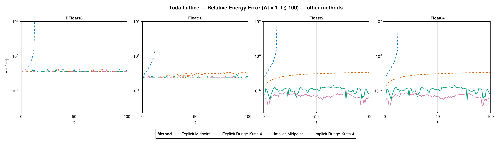
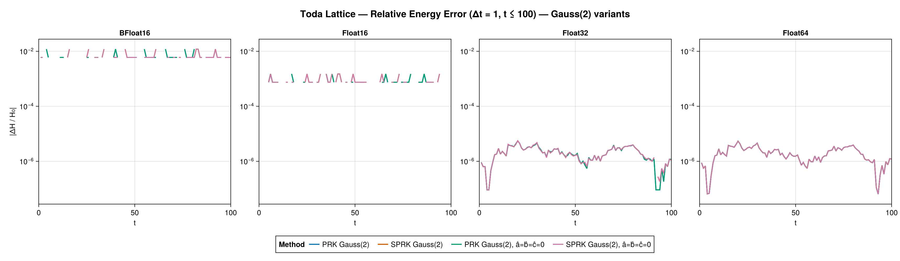
The Gauss(8) reference converges even at Δt = 1, so the full plot set is produced. At this coarse step the explicit methods diverge within the first ~10–15 steps (guard-truncated) at every precision, while implicit midpoint and Crank–Nicolson keep the energy error near machine level (≈ 1e-5 in Float32/Float64, sitting at the resolution floor in Float16) over the whole horizon and RK4 drifts only mildly. Because this run now shares the short run's t ≤ 100 horizon, the Float16 implicit methods no longer hit the time-grid saturation that breaks them on the far longer oscillator/pendulum coarse runs.
Solution error
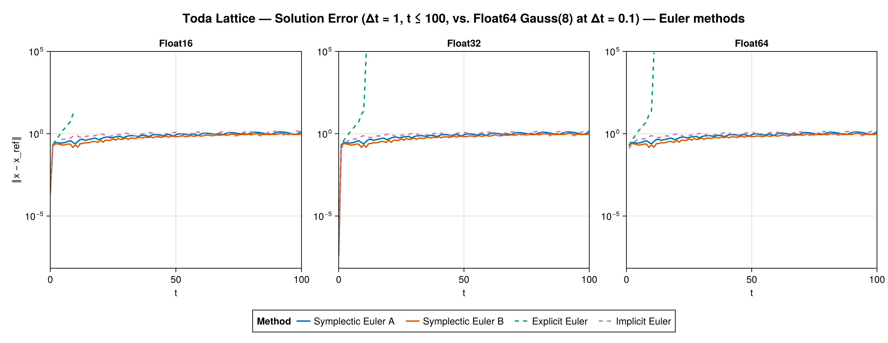
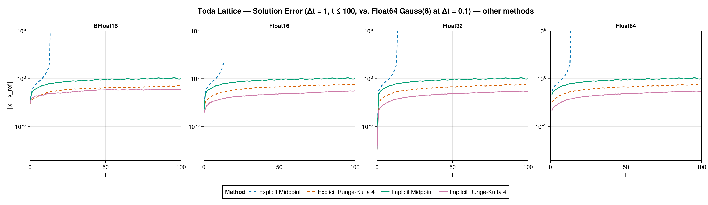
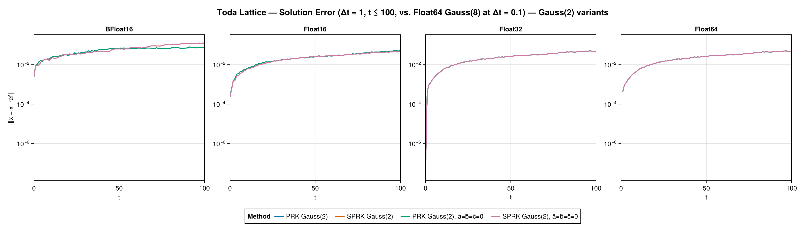
The guard-truncated explicit methods lose the reference within the first few steps, while the implicit-midpoint, Crank–Nicolson and Gauss(2) methods keep the coarse-step trajectory error controlled over the full horizon.
Phase-space trajectory
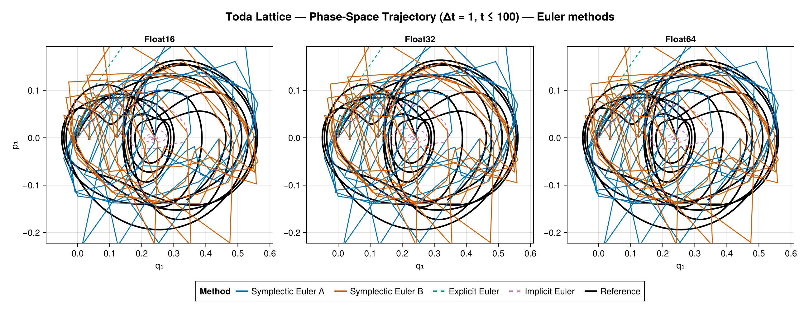
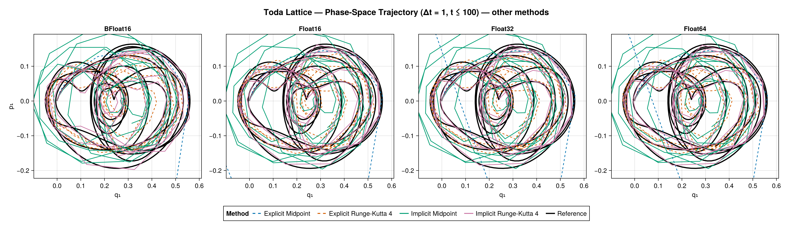
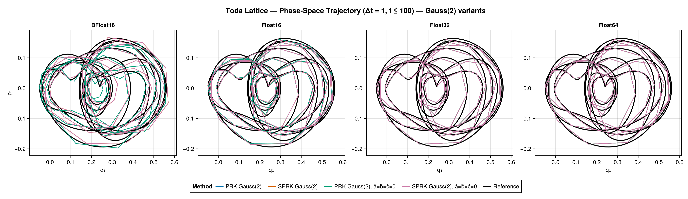